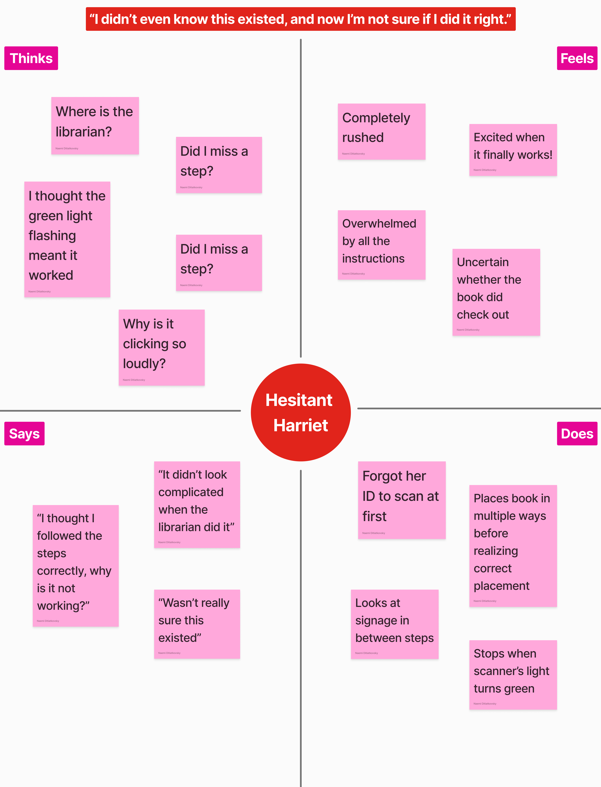
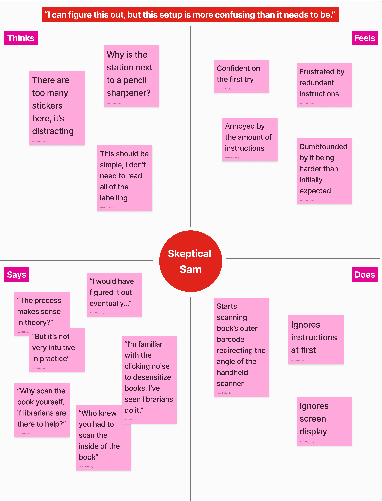

Personas and Storytelling
This design exploration will focus on the public interface of library self-checkout stations.
Found in libraries like the Rockefeller at Brown University, these allow patrons to check out books without assistance from a librarian.
Through this design research I will:
- Step into user’s shoes and behaviors
- Observe and interview users’ on their experiences
- Illustrate user interactions with Personas
- Narrate users’ end-to-end journey through storyboarding
I started this exploration by annotating some of the key features of this public interface

After each interaction, I interviewed each user on their interaction with the self-check out station. Here are the key take-aways:
1. Have you used this checkout station before?
- Some users were unaware of the self-checkout option or found it confusing due to prior word-of-mouth experiences.
- Others had used it occasionally, preferring human interaction over automation.
2. If so, how often, and what has your previous experience been like?
- Users who had used it before did so only when staff weren’t available.
- Prior experience sometimes helped them anticipate the process (e.g., from observing librarians), but the interface still caused confusion.
3. If not, what did you expect the checkout process to involve?
- Assumed it would involve scanning the book but did not expect needing to scan an ID first.
- Lack of prior awareness of the self-checkout station contributed to initial confusion.
4. Could you walk me through the checkout process?
- Users followed expected steps but encountered issues with barcode placement, ID scanning, and machine responses.
- The distinction between different components (screen vs. scanner) was unclear to some users.
5. Would you describe the checkout process as frictionless?
- No—users encountered multiple points of confusion, especially with barcode placement and feedback cues.
- Some experienced failed attempts before successfully checking out.
6. If not in which part of the process did you experience that friction on what to do next?
- The green light gave misleading feedback, making users think the checkout was complete when it wasn’t.
- The number of instructional stickers caused information overload instead of clarity.
- Uncertainty about whether the screen and scanner were part of the same system.
7. Did the interface have all the available features you expected? Why or why not?
- While it had all the necessary functions, users found it cluttered or counterintuitive.
- Some instructions were helpful, but others (like excessive labels) contributed to confusion.
8. Do you think you could have completed the checkout process without the on-screen instructions or labels? Why or why not?
- Some users thought they could have figured it out eventually, especially if they had prior exposure to librarians checking out books.
- Others might have assumed the checkout was complete due to misleading visual cues.
Empathy Maps
The next step in my exploration was creating personas that are not actual people but I synthesized directly from observations of the interviewed users.
One of the key goals through this exercise was to summarize the distinct set of behavioral patterns regarding the use of public interface.


Storyboarding
The final component of this analysis involved depicting one of the persona's start-to-end user journey. This reflects the goals my persona and all the steps necessary to use the interface.